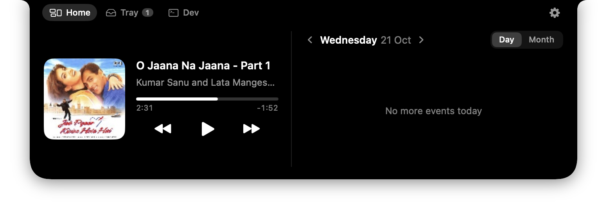

Now Playing, for any app
Artwork, a seekable progress bar and play, pause and skip for whatever macOS is playing: Spotify, Music, Podcasts or YouTube in a browser. The closed notch shows the album art and a live level meter.
Hover the notch and it opens into a little deck: your music, today’s meetings, the files you’re moving around, the servers running on your Mac and what Claude Code is up to. Move away and it tucks back in.
brew install --cask chiranjeebhub/tap/notchdeck~/code/shop-api $ npm run dev ready on http://localhost:3000 ~/code/shop-api $ claude ✳ I’ll run the tests before touching the checkout flow. Bash(npm test) · waiting for permission
npm testA working replica. Hover the notch to open it and move away to tuck it in, or drop a file from your Mac onto the screen to put it in the Tray. The orange dot means Claude is waiting on you: answer it in Dev → Agents.
Built in Swift and SwiftUI, so it feels like part of macOS. It lives in the menu bar with no Dock icon, and the notch looks like a notch until you need it.
Artwork, a seekable progress bar and play, pause and skip for whatever macOS is playing: Spotify, Music, Podcasts or YouTube in a browser. The closed notch shows the album art and a live level meter.
Today’s meetings at a glance, or a month view with dots on busy days. One-click Join for Google Meet, Zoom, Teams and Webex, for every account in the Calendar app.
Drop files on the notch to keep them handy, then drag them out wherever they’re going. Quick Look thumbnails, an AirDrop tile, and the tray is still there after a restart.
Live CPU, memory and disk, every server listening on your Mac with its project folder, Docker containers and top processes. Open, copy or stop anything in a click.
Every Claude Code and Codex session and what it’s doing. When Claude needs permission the notch lights up, and you can Allow or Deny without hunting for the right terminal tab.
Hide or reorder tabs, pick the widgets on Home and the three Dev stats, choose calendars, and open on hover or click. Notes live in the notch too, and updates install themselves.
The Dev tab is the part you’ll keep opening. It knows your servers, your agents, your long builds and how much of your Claude limit is left.
Stop hunting through terminals for that forgotten server on port 3000. Every listening port, with its project folder, CPU and memory.
See every agent session and what it’s doing. When one needs you, the closed notch lights up. Answer from the notch, or jump straight to its terminal tab.
Start a build or a test run and go do something else. The notch shows a timer while it runs and a tick or a cross when it ends, with Re-run.
How much of your Claude and Codex limits you’ve used, when each resets, and whether you’re on pace to last the week. Nothing to set up.

Home: what’s playing on the left, what’s next on your calendar on the right.
There’s no account and nothing to configure before it’s useful. Everything after the second step is optional.
NotchDeck shows you what’s already on your Mac. There’s no NotchDeck server, so there’s nowhere for your data to go.
One line in Terminal.
brew install --cask chiranjeebhub/tap/notchdeckClone the repo and run scripts/build-app.sh with Xcode 15 or the Swift tools.
Requires macOS 14 Sonoma or later, on Apple silicon or Intel. A notch is optional. NotchDeck is distributed outside the Mac App Store because the App Store sandbox would rule out system-wide Now Playing and everything in the Dev tab.
NotchDeck is MIT-licensed and built in the open. If it earns its spot at the top of your screen, a star helps other people find it, and a sponsorship or a coffee keeps new features coming.
Yes. It’s free and MIT licensed, with no subscription, account or in-app purchase.
Yes. Displays without a notch, including external monitors, get a slim handle at the top of the screen that opens the same deck.
It looks like a normal notch until you hover it, and tucks back in when you move away. If hovering feels too eager, set it to open on click instead, or lengthen the hover delay.
Click Connect in Settings → Dev and NotchDeck adds a small hook to Claude Code that reports what each session is doing and passes permission prompts to the notch. Codex sessions are picked up from the files Codex keeps on your Mac.
The App Store sandbox doesn’t allow system-wide Now Playing or looking at the servers and processes on your Mac, which is most of the Dev tab. The direct download is signed and notarized by Apple instead.